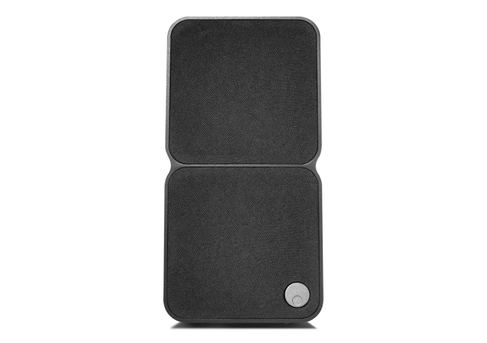
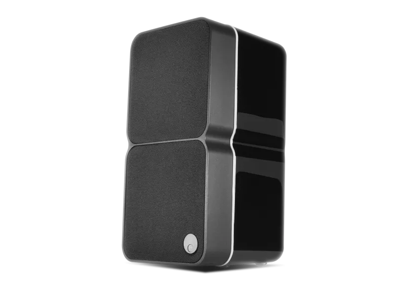
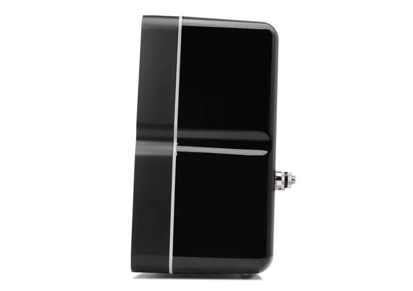
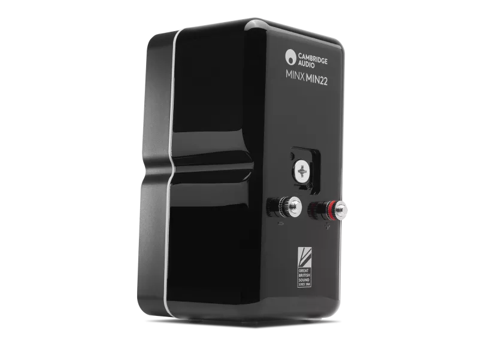
Minx Min 22
Minx Min 22は期待を超えるパフォーマンスを提供します。専用の低域ドライバーを搭載し、小型のMin 12よりも深みとディテールを実現。Minxサブウーファーと組み合わせてフルボディなサウンドを創出するよう設計されたMin 22は、音楽、映画、ホームシアターセットアップの一部として、あらゆる空間に最適です。
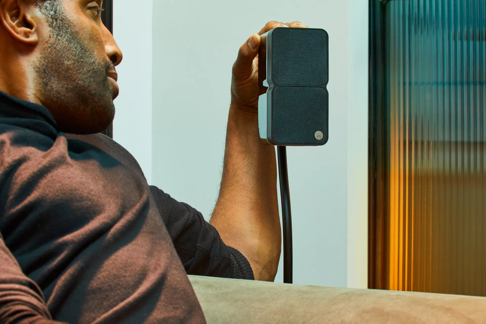
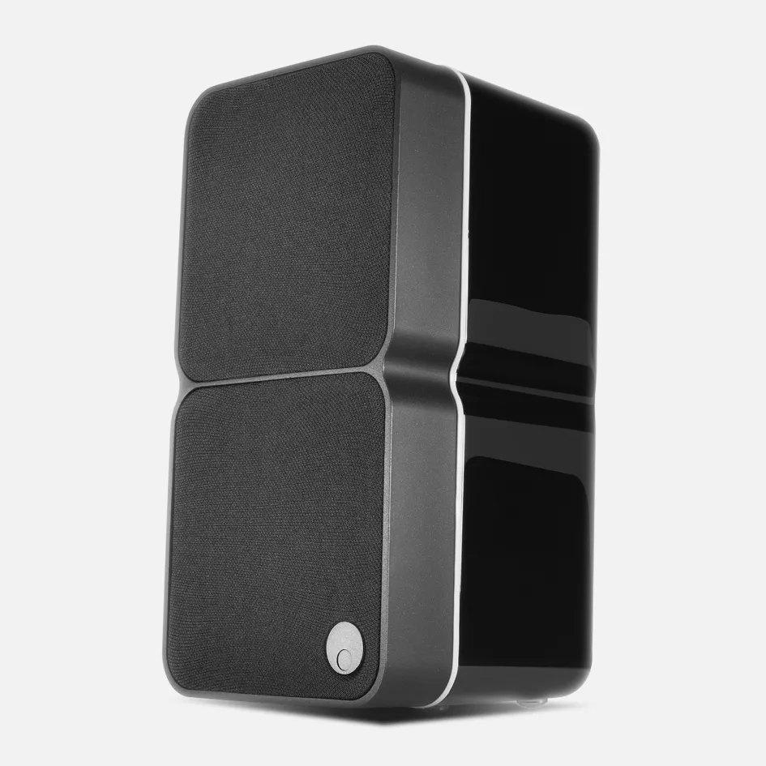
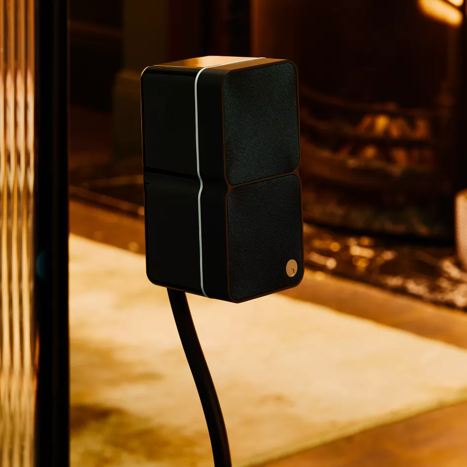
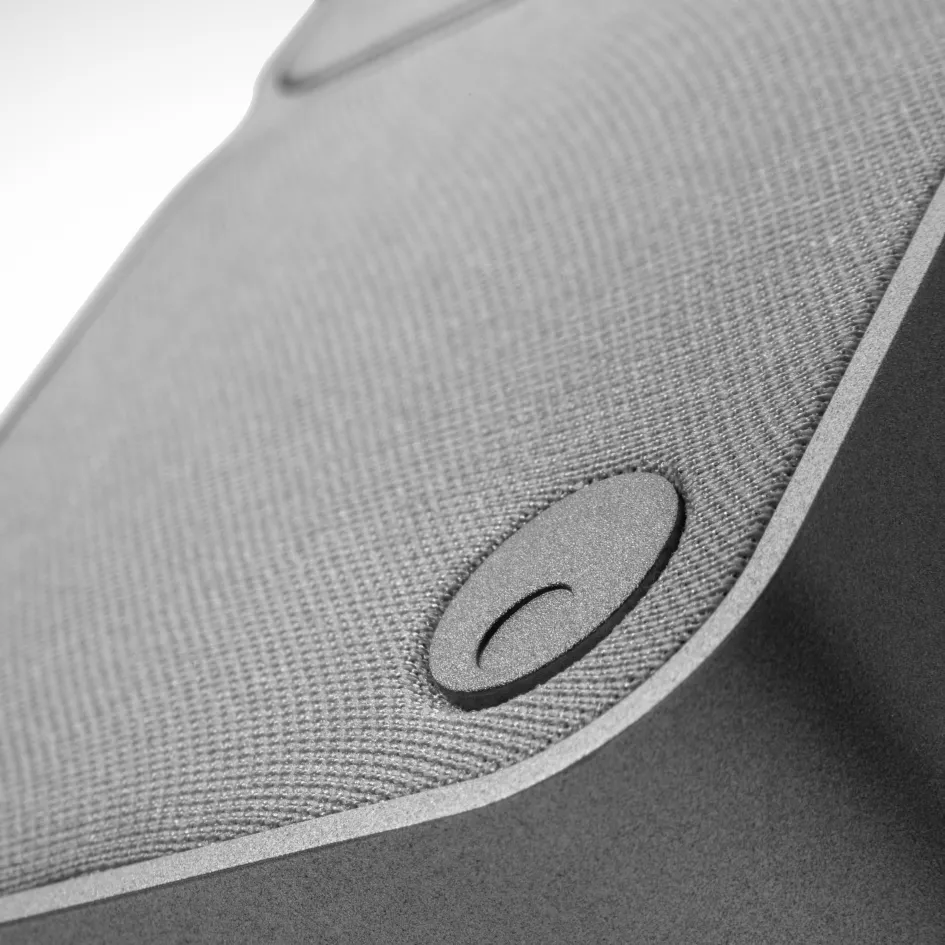
広がるサウンド、コンパクトサイズ
BMR技術により、Min 22は従来のスピーカーより広いサウンドステージを実現し、どこに座っていてもピンポイントの正確さとディテールを確保します。
フレキシブルな設置に対応
Min 22は縦置きでも横置きでも設置可能。ステレオ、サラウンドサウンド、センターチャンネルスピーカーとしても最適です。
洗練された美学、堅牢なビルド
ハイグロスラッカー仕上げのABSキャビネットとダイキャストアルミニウムエクソスケルトンが、どんなインテリアにも映えるスリークで耐久性のあるフィニッシュを実現。
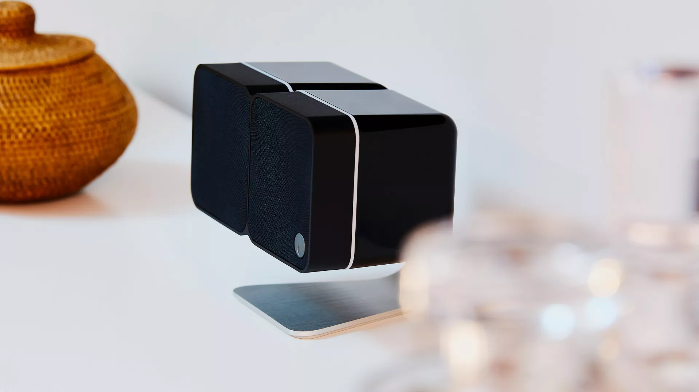
BIG SOUND, FLEXIBLE PLACEMENT
大きなサウンド、自在な設置
Minx Min 22はディスクリートで高性能なオーディオのために設計されています。デスク、棚、壁掛け、Minxサブウーファーとの組み合わせなど、BMRドライバーが卓越した明瞭さと拡散で部屋を満たすサウンドを確保します。
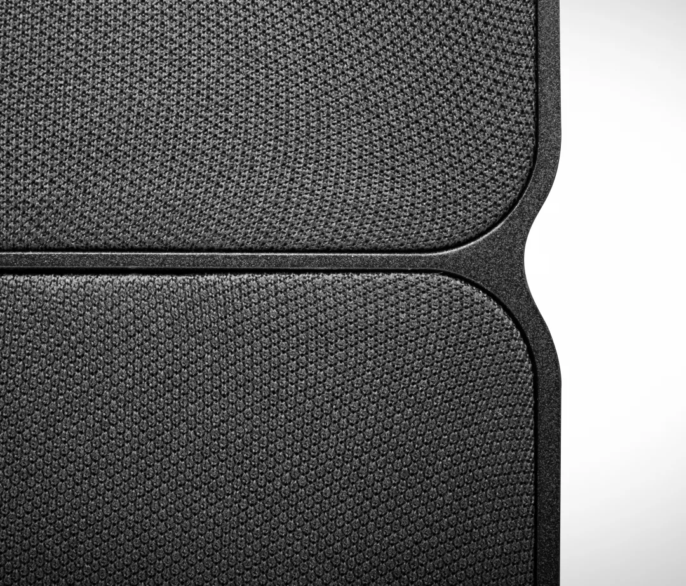
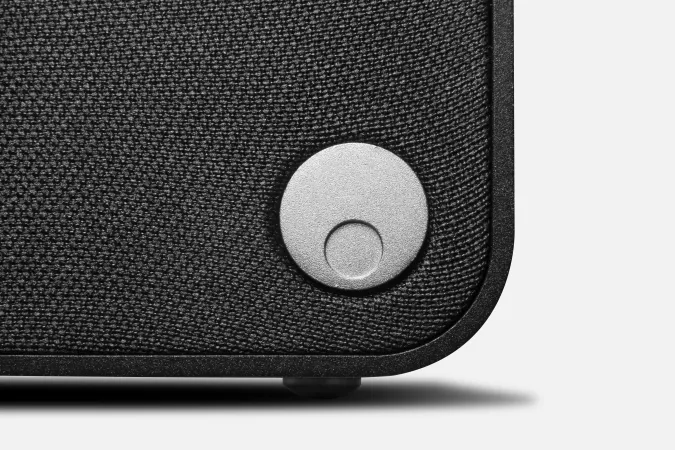
ディテール際立つ、美しくコンパクト
第4世代BMRドライバー
180°の音の拡散、従来スピーカーより広いスウィートスポット。
専用低域ドライバー
深みとバスレスポンスを強化し、よりリッチでディテール豊かなサウンドを実現。
多彩な設置方法
フラッシュウォールブラケット、フロアスタンド、テーブルスタンドに対応。縦横自在に設置可能。
プレミアムキャビネット構造
ラッカー仕上げABSエンクロージャーとダイキャストアルミニウム補強材がクリーンで歪みのないサウンドを確保。
高品質バインディングポスト
バナナプラグまたはベアワイヤに対応。
「Cambridge Audioは、オーディオ企業が明瞭さと音質をどこまで追求できるかの限界を押し続けています」